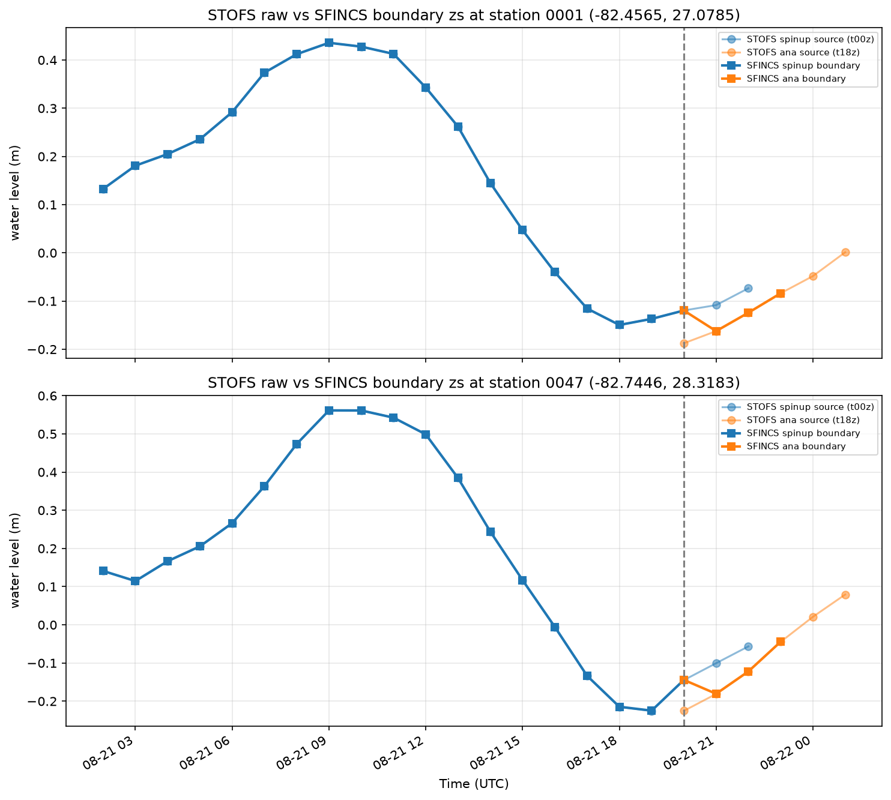

STOFS boundary pipeline: status and remaining work#
This note tracks the STOFS / tidal boundary pipeline. It was originally a four-phase improvement plan written in May 2026. Since then phase 4 has been delivered, phase 3's objective has been met, phase 1 turned out to be an aspect of phase 2 rather than a task of its own, and phase 2 turned out to be harder than described. This revision records where each stands and what is actually left.
| Phase | Status |
|---|---|
| 1. STOFS-aware tidal fallback | Subsumed by phase 2 — the condition is cycle availability |
| 2. Multi-cycle STOFS stitching | Open, and blocked on cycle-to-cycle continuity — see below |
| 3. Regional (spatial) STOFS subsetting | Done at regrid time; a download-side crop remains unimplemented, low value |
| 4. Pure-Python tidal prediction | Delivered via pyTMD |
Phase 1 — subsumed by phase 2#
The tidal fill is what keeps a run longer than 180 h supplied once its single STOFS
cycle runs out. extend_schism_boundary appends from fill_from_hour=181, reads the
existing file's own time_step rather than assuming hourly, and writes only rows from
that point on, so the STOFS hours already in elev2D.th.nc stay as they are.
make_stofs_boundary (schism/prep.py) treats it as best-effort: a failure logs loudly
and leaves the first 180 h of valid forcing in place rather than aborting, and a run
past 180 h with no paths.tidal_atlas_dir configured gets a warning instead of a silent
truncation.
This phase was framed as making that fill conditional — fall back to tides only when STOFS genuinely does not cover the window. That condition turns out to be the same condition as phase 2. Hours past 180 are tidal-only because only one cycle is ever downloaded, so there is no further STOFS data available to prefer; the fill is not displacing anything. Once multiple cycles can be stitched, "STOFS where it exists, tides beyond it" falls out of the stitching logic rather than needing a check of its own, so it is tracked there.
Phase 2 — multi-cycle STOFS, and the continuity problem#
Still open, and the interesting part is not the stitching.
Current behavior#
_build_stofs_urls constructs exactly one URL from the simulation start date's 6-hourly
cycle, and download_data resolves and fetches exactly one cycle per invocation. The
end date is not considered. Each STOFS cycle covers at most ~180 h, so a longer
simulation gets STOFS for its first 180 h and a pyTMD tidal fill after that.
The forecast pipeline already spans multiple cycles#
A single coastal-calibration run uses one cycle — but the forecast orchestration
invokes the CLI once per segment. forecast_demo/bin/hotstart_coastal_models.sh
runs a standalone spinup segment; forecast_demo/ecf_home/run_stofs_download_ana.ecf
and run_stofs_download_sr.ecf run the hourly ana and sr segments, each against its
own generated run.yaml. Every one of those independently calls resolve_stofs_cycle
for its own start time, and a spinup beginning ~21 h before the live cycle routinely
lands in a different 6-hourly bucket than the ana segment it hands off to.
Nothing joins those segments' forcing. Continuity across a segment boundary is
supplied only by the model hot-starting from the previous segment's dynamical state
(paths.hot_start_file for SCHISM, rstfile / --sfincs-rst-file for SFINCS); the
boundary series simply restarts from whatever cycle the new segment resolved.
What that costs#

In this example the t18z analysis cycle sits ~5–8 cm below the t00z spinup cycle at the same valid time, at both stations. The SFINCS boundary inherits that step, which enters the domain as a small wave.
How much this matters depends entirely on how well the two cycles agree. When consecutive STOFS forecasts are close there is no issue and the handoff is invisible. When they differ substantially, the step propagates inward — and nothing about this is specific to SFINCS: the figure happens to show a SFINCS boundary, but SCHISM takes its boundary from the same cycles in the same way, so both coastal models are affected alike. We have seen this in forecast test cases.
So this is a live forecast issue today, not only a hazard for some future >180 h stitching feature. Any work here has to address both.
What a solution needs#
The naive approach this note previously recommended — "for each output time step, select the best available STOFS cycle, preferring the cycle whose forecast hour is closest to the analysis time" — is precisely what produces the jump. Treat it as retracted. Picking the most accurate value per timestep is not the same as picking a continuous series, and the boundary condition needs the latter.
A workable design needs a continuity step before the stitched series is written. Candidates, none yet chosen:
- Offset matching. Over the overlap between consecutive cycles, compute the mean difference per boundary node and shift the incoming cycle onto the outgoing one. Preserves shape, cheap, but accumulates drift across many seams.
- Blending / tapering. Weight the two cycles across their overlap window so the transition is continuous by construction. No discontinuity by design, at the cost of a physically mixed segment.
- Rejection with a threshold. Refuse a cycle whose overlap disagreement exceeds a configured tolerance and fall back to extending the previous one. Simple, and surfaces the problem instead of hiding it.
Whichever is chosen, it applies to the forecast segment handoff as much as to within-run
stitching, and the two existing additive-offset hooks are the natural places to look for
a seam: correct_elevation in schism/prep.py and the forcing_to_mesh_offset_m path
in schism/boundary.py / sfincs/stages.py. Both today apply a static,
config-supplied correction uniformly across one segment's series, so neither is a seam
correction as written — but both already do the "add an offset to a water-level series
before it is consumed" mechanics.
SCHISM's own ramp parameters#
For the forecast handoff specifically, SCHISM's dramp and nramp_elev look like the
obvious candidates and are worth investigating before anything is built on our side.
Thorough investigation and testing have not been done yet, so what follows is a starting
point rather than a recommendation.
With nramp_elev=1 the solver blends the open-boundary elevation from the hotstart
value onto the imposed forcing over dramp days, rather than applying the new forcing
at full strength from the first step (schism_step.F90, elevation b.c. block; the ramp
weight is a tanh over dramp and the blend target is the post-hotstart elevation
field). That is the same idea as the blending option above, but inside the solver and
limited to a segment start — it would not help a mid-run stitch.
Note the failure mode if only half of this is applied: setting dramp > 0 on a
hotstarted segment without nramp_elev = 1 ramps the boundary up from zero rather
than from the hotstart elevation, which would be a much larger artificial transient than
the step it was meant to remove. Both keys can be passed through
model_config.run_param_overrides — gen_cycle_config.py already uses
{"dramp": 0.25, "nramp_elev": 1} as its documented example — so this can be tested on
a forecast cycle without a code change.
Download-side changes still required#
_build_stofs_urlsaccepts a start and end, and generates one URL per 6-hourly cycle needed to cover the window.- Only cycles not already cached are fetched;
_stofs_local_file_coversextends to the multi-file case. regrid_estofsaccepts multiple input files and produces one continuouselev2D.th.nc, with the continuity step above applied at each seam.
Phase 3 — objective met; a download-side crop remains open#
The original concern was that each STOFS cycle is ~12 GB globally while a simulation
needs a few hours of it. That is solved: _download_stofs_time_subset in
data/downloader.py opens the remote file lazily over HTTP range requests and
materializes only the [start, end + 1h] slice of time / zeta, plus the static mesh
variables (x, y, element) that regrid_estofs.py and the SFINCS reader need. The
full file is never downloaded.
Two related fixes landed alongside it:
resolve_stofs_cyclewalks back in 6-hour steps from the naive cycle until it finds one actually published, so a "now" start time doesn't name a cycle that does not exist yet._stofs_local_file_coversverifies an existing local file's real time coverage before reusing it.get_stofs_pathnames files only by 6-hourly cycle, so a short-window run and a long-window run sharing a cycle resolve to the same path; a bare existence check let the narrower file satisfy the wider caller. This was confirmed live as the cause of a short-range run losing all real boundary forcing after its first hour.
Spatial cropping already happens, but at regrid time rather than at download time.
regrid_estofs derives a bounding box from the destination open-boundary node
coordinates and passes it to build_unstructured_mesh, which keeps only the STOFS nodes
inside that box plus a 2° buffer (bbox_node_indices in regridding/esmf_utils.py).
The reduction is logged as STOFS source mesh: N/M nodes kept after bbox filter. This
is what keeps ESMF mesh construction tractable against the global grid.
The SFINCS side does the same thing by a different route: _load_geodataset_for_bnd
requests the catalog entry with geom set to the boundary points and a 50 km buffer, so
only nearby source nodes are ever materialised before the IDW interpolation. Both
consumers therefore see a regional subset; neither reads the global mesh into memory.
What is not implemented is cropping before the bytes cross the network.
_download_stofs_time_subset copies x, y and element whole and slices only zeta
in time, so the local file still holds the global mesh for the hours it covers. Doing
the crop upstream of the download would shrink the on-disk file and the regridder's
input, but the transfer cost is already dominated by the time slice, so the remaining
payoff is small — this is a low-priority idea rather than a plan.
If it is ever revisited, note that the node-selection half already exists in
bbox_node_indices; what a download-side crop additionally needs is the connectivity
remap — keep only triangles with all three vertices inside, then renumber element to
the new sequential node indices. Thalassa
implements this pattern, but it is EUPL-1.2 (copyleft) and unmaintained for two years,
so write an independent implementation rather than extracting its code.
Phase 4 — delivered#
Tidal prediction is pure Python. src/coastal_calibration/data/tides.py wraps
pyTMD and exposes three entry points:
predict_tide_at_points— elevations at arbitrary points over an arbitrary time array; the SFINCS forcing stage calls this directly so it can manage its own cadence.write_schism_boundary— writes the canonical 4-Delev2D.th.ncat a caller-supplied cadence.extend_schism_boundary— appends a tidal-only fill to an existingelev2D.th.nc.
This replaced the predict_tide Fortran binary, the bundled pytides library, the
scipy.griddata interpolation and the text-file subprocess pipeline in one step. The
following no longer exist: tides/pytides/, tides/_ocean_tide.py, _otps.py,
make_otps_input, otps_to_open_bnds, and the separate k1.nc … s2.nc constituent
files. pyTMD reads the TPXO10 atlas directly, and any netCDF model in
pyTMD.io.load_database() with an elevation group works — TPXO9, FES2014, GOT, EOT —
selected per run via BoundaryConfig.tidal_model.
This was solved by adopting a maintained library rather than by writing the bespoke module the original plan specified. One consequence worth recording: that plan listed three suspected bugs in the OTPS Fortran nodal-correction code (an L2 radian conversion, an MS4 compound factor, a hardcoded M3 factor). Those were never confirmed — the investigation was made moot rather than completed. They are noted here only so nobody re-derives them believing there is an open action; there is not.
Reference: STOFS data availability#
| Property | Value |
|---|---|
| Archive start | 2020-12-30 (estofs naming) / 2023-01-08 (stofs_2d_glo naming) |
| Forecast horizon | ~180 hours per cycle |
| Cycle frequency | Every 6 hours (00, 06, 12, 18 UTC) |
| Archive location | s3://noaa-gestofs-pds (public, no auth) |
| File format | Unstructured NetCDF (ADCIRC triangular mesh) |
| File size | ~12 GB per cycle (global, full time range) |
| Subsetting API | None; HTTP range reads are used instead |
For any retrospective simulation starting after 2020-12-30, overlapping cycles exist to cover the entire period — the data is there, the pipeline just does not fetch more than one cycle.